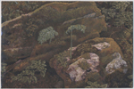
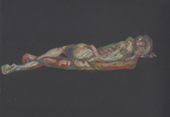
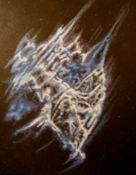
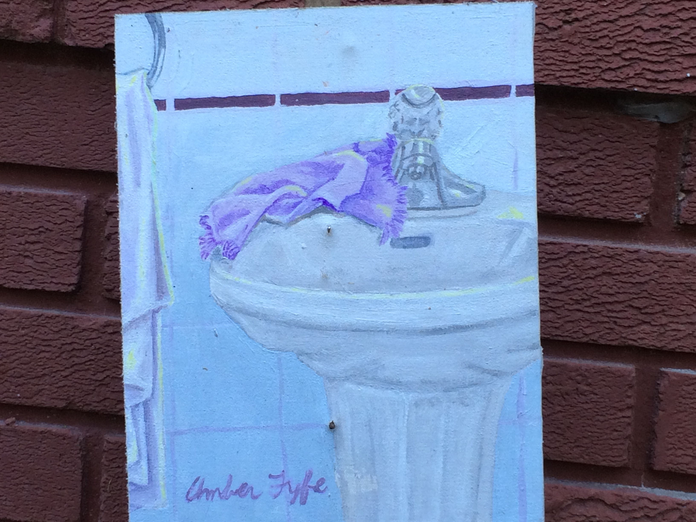

Mossy Rocks | Nature Resting (psychedelic ambiguity of nature and self.)

On the Beach | Morning

Prairie Lily | The Reflection Nebula

(Summarizes the tribute to fyfe's grandfathers generation of artists. Is she cleaning them up? Or wiping them down the drain?) Tribute to the Regina 5
People always say you suffer for your artwork. ...I didn't know I was going to suffer this much. - Amber Fyfe